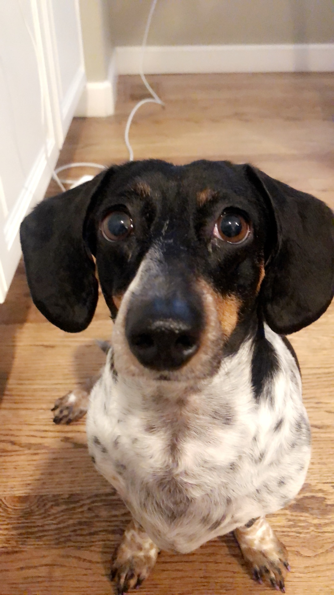
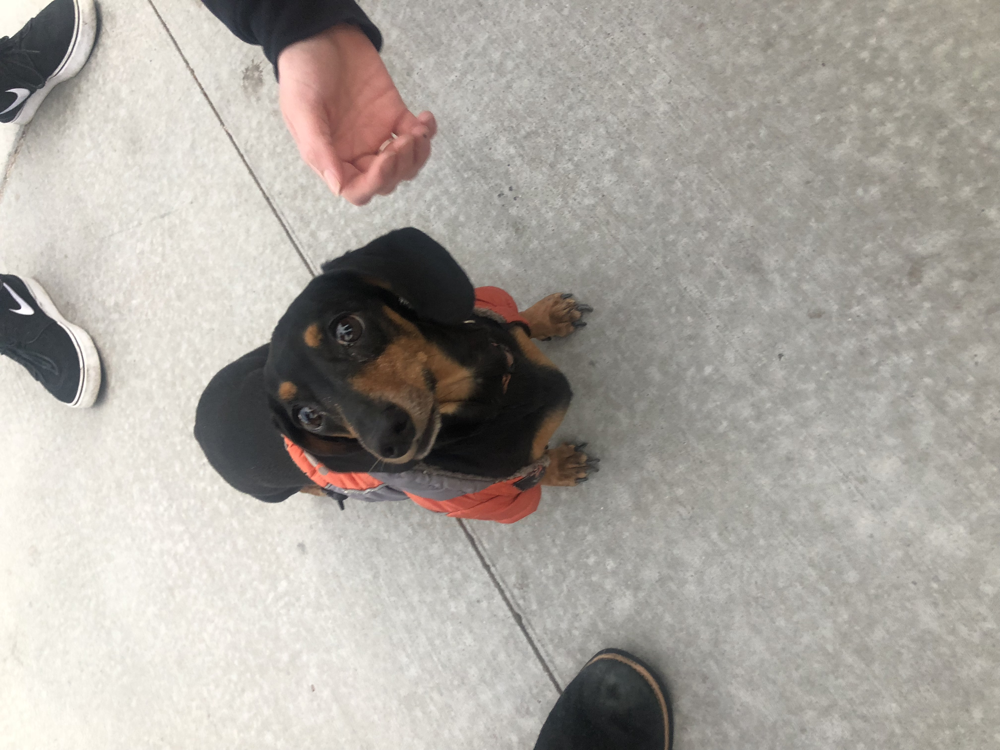
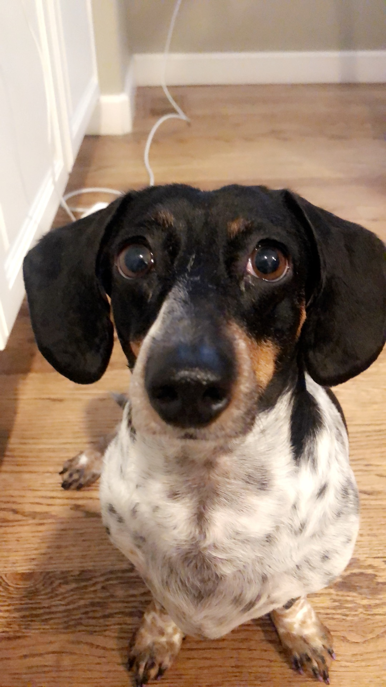
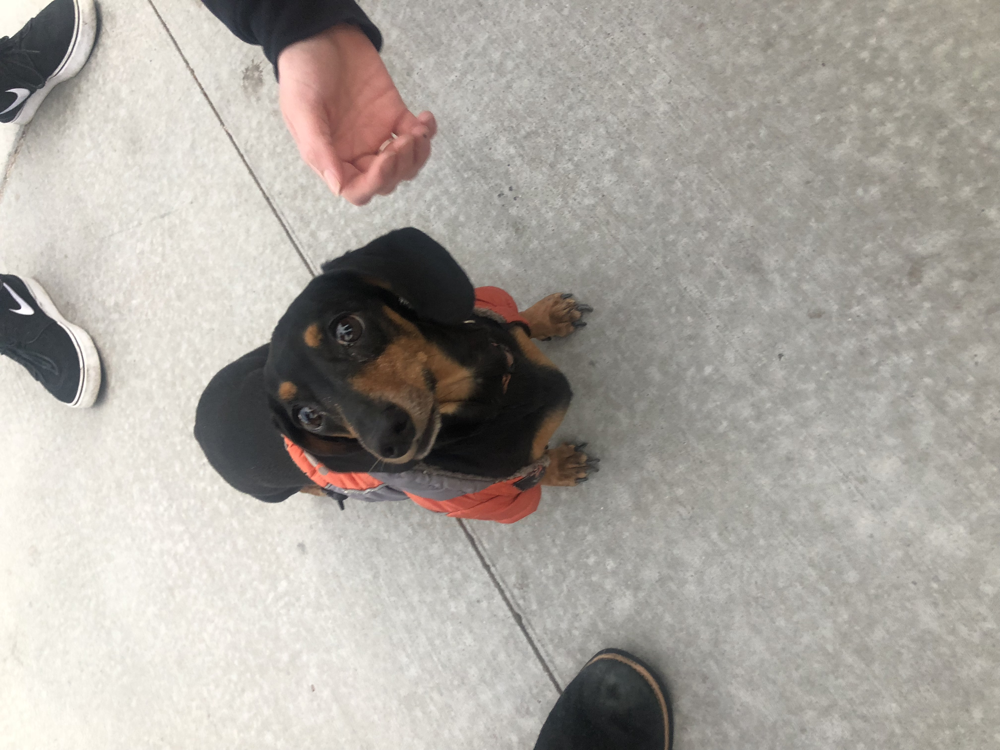

Daschunds are famously known for their long bodies and short legs. Being a part of the hound family, they have special senses to hunt and dig for animals. Their long bodies, sharp claws, and teeth allow them to dig and manuever through holes. Daschunds can be two sizes, standard (16-32lbs) or miniature (11lbs and under. They can also have longhaired, smooth, or wirehaired. It is important to keep your Daschund in shape because their long bodies make them have a higher risk of developing a disk problem if they become overweight


:max_bytes(150000):strip_icc():format(webp)/breed-profile-dachshund-1117959_FINAL_NEW-9d117a53e8a0499689b960c770cd7722.png) 


